SSH Honeypot with Python
Project description:
In this project, I will host a Google Cloud VM and create an SSH honeypot with Python on it.
Google Cloud VM:
I have created my account. Now I will create my VM.
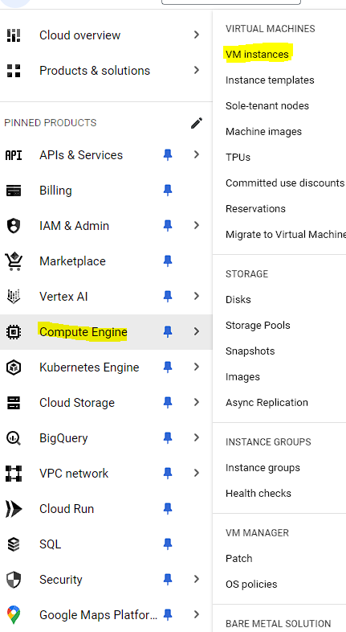
I made a few changes to allocate more resources and set up the boot options.
I have created my VM.
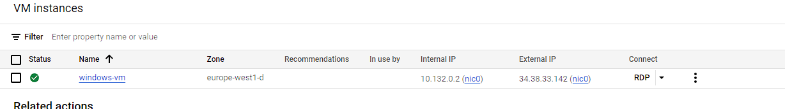
I set the username and password.
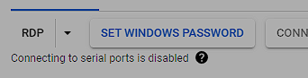
I successfully connected.
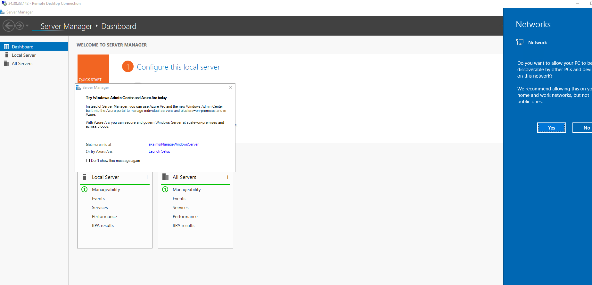
I added more disk space, but it is not showing.
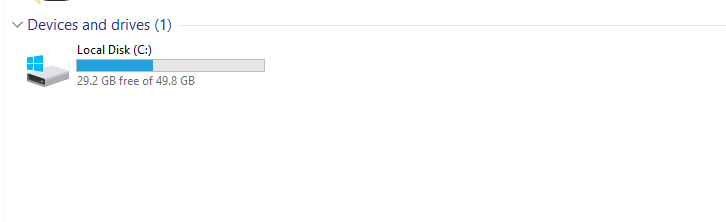
The disk is available. I will allocate it and proceed with the Python installation.
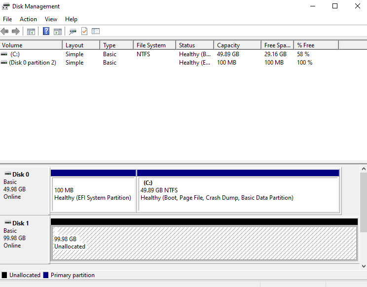
I don't have any version of Python pre-installed, so I will install the latest version, as well as Visual Studio Code.
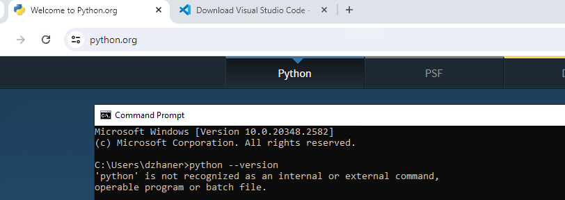
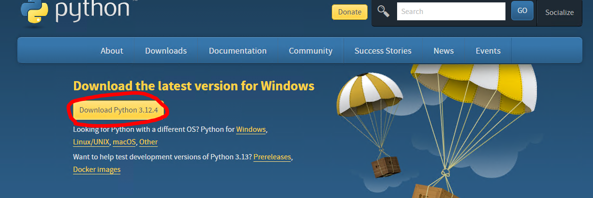
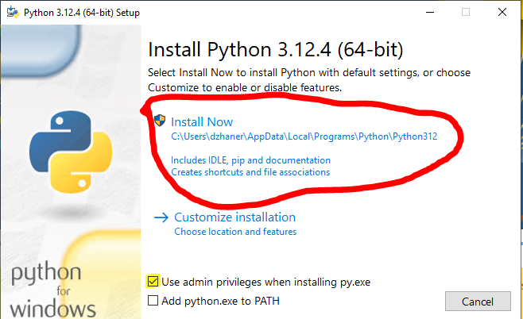
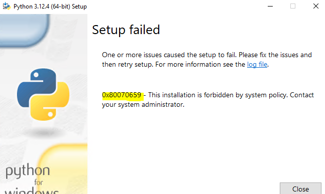
I checked the 'Prohibit User Installs' and ensured it is set to 'Not Configured' or 'Disabled', so this is not the problem. I will check the Local Security Policy.
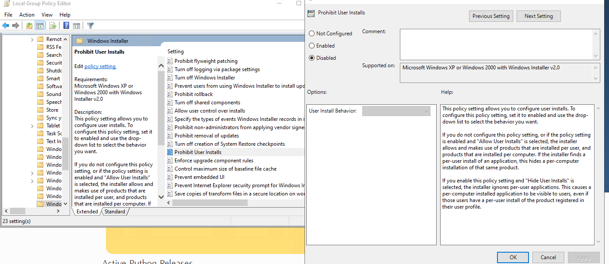
The Local Security Policy is also not the problem.
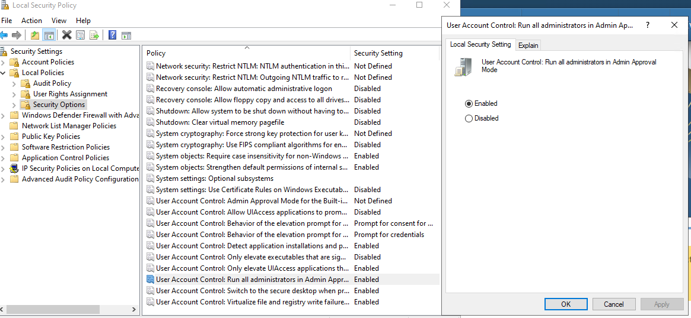
I temporarily disabled the antivirus/firewall.
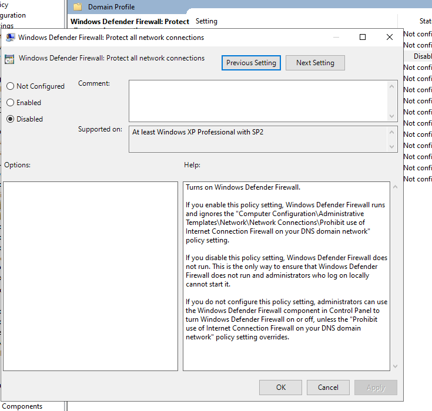
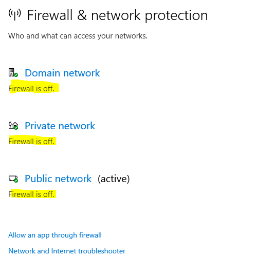
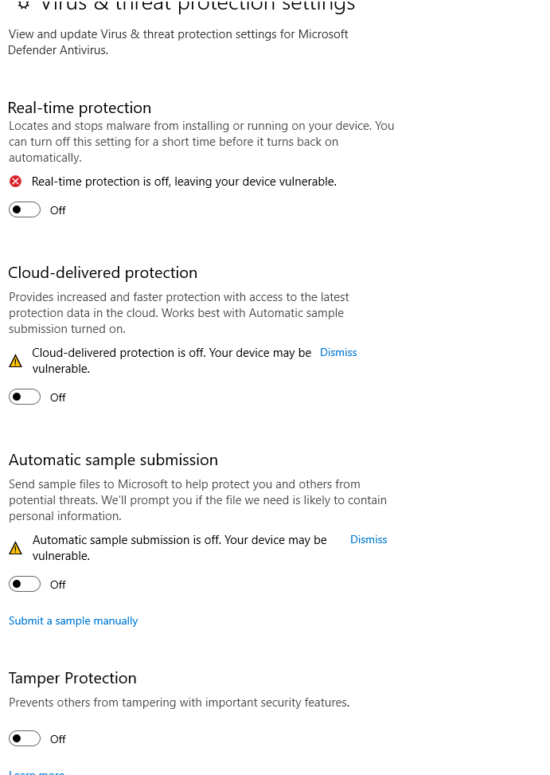
I still got the same error.
I ran the installation process through PowerShell, and it finally worked.
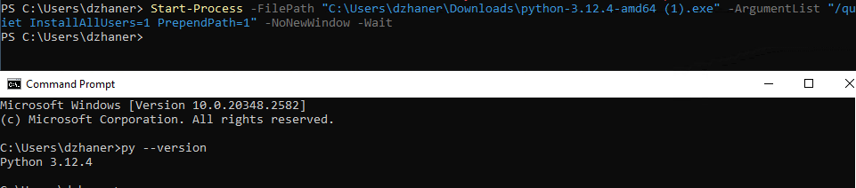
Now it is time to download and set up Visual Studio.
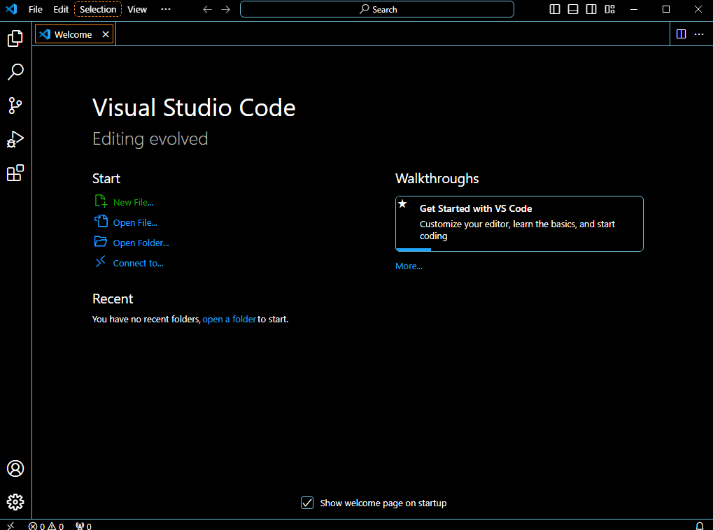
I tested if it is working with a simple print command.
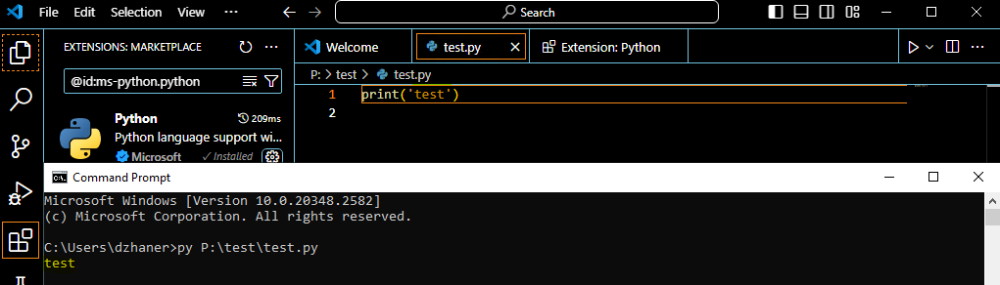
First, let's add the shebang.
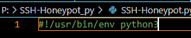
As a good practice, I will add a main function.
I will start building the SSH server from scratch. First, I am going to set up a server socket.
I am going to need to import the server socket library.
I will add socket.AF_INET to specify that I want it to be an IP-based socket. Then, I will add socket.SOCK_STREAM to indicate that I want a TCP socket. So now, I have a IP TCP socket.
Another thing I need to do is use setsockopt with socket.SOL_SOCKET. This is a common operation done on sockets where at the socket level, I want to set the option socket.SO_REUSEADDR. What this does is, if I close this socket, I don't want the operating
system to hold it in a closed state, listening to packets. I want it to immediately make the address available so I can run it again.
Now I am going to bind it.
The first thing inside the bind brackets is the interface it
will listen on. I will leave it blank for all interfaces. For the port, I am going to pick a high port because I am not running as root and want to be able to listen. I saw a tutorial where they used port 2222 and it worked well, so
I will use port 2222 as well. Normally, it is port 22.
I heard from one tutorial where the guy used a pre-written tool, which I would like to check out in a different project, that port 2222 is for endless SSH. It is not ideal
to run, but for this project, I just want to focus on the coding aspect of things.
And the last thing I need to do is have this server socket listen or be bound to the port I want to listen on. That would be server_sock.listen(223).
This specifies an arbitrary number for how many connections I want to queue for accepting. From what I saw, some people use 100, but I will use 223.
Now, this doesn't actually do anything yet, but I will run it.
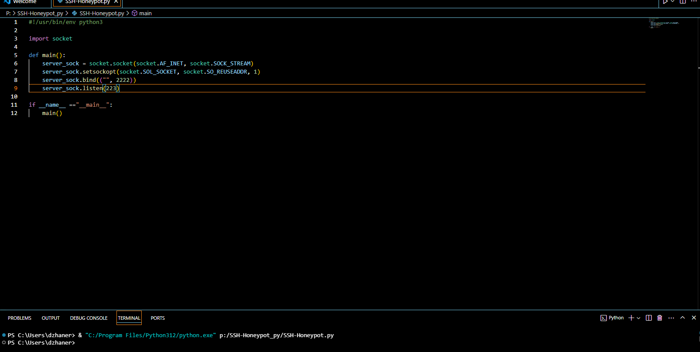
It runs but then immediately exits, as expected.
Just for the sake of demonstration, I will add input(). Now it will wait for me to input something.
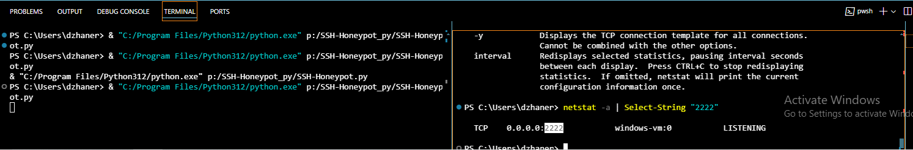
But listening on its own doesn't do a whole lot.
I will add Netcat, as I will need it to connect to the SSH server through TCP. First, I downloaded Netcat, but it came zipped, so I created a new
folder in C:\Program Files and unzipped it there.
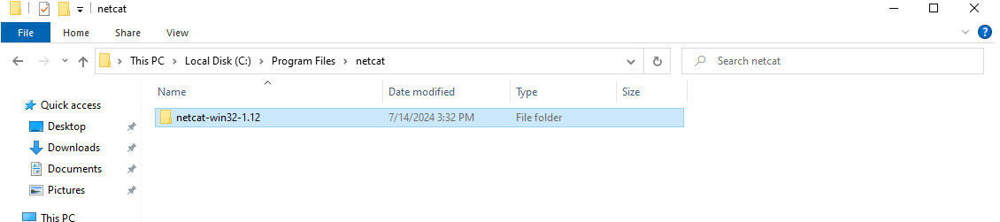
Now I will add Netcat to my System PATH.
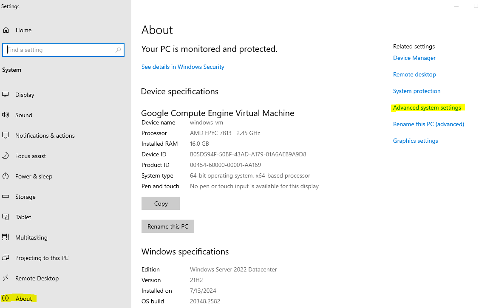
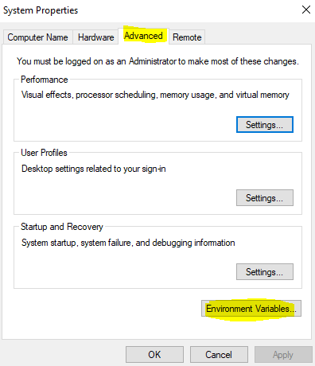
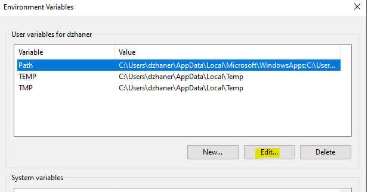
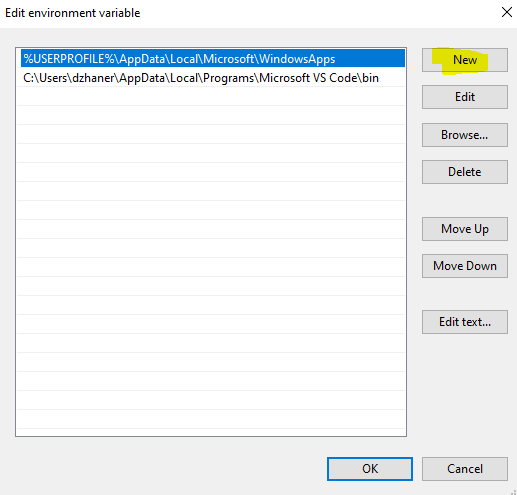
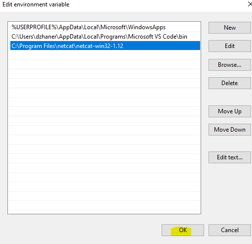
Now Netcat works, and I have even started a three-way handshake with my server.
Once this is complete, that's when accept() can get the connection from the queue.
So now I am able to start accepting the connection,
but there's nothing to accept the socket and do anything with it. So, I will set that up now.
So instead of input(), I am going to use client_sock, client_addr = server_sock.accept(). accept() tells the server socket to check the queue of connections trying to connect to it and establish that connection. It returns a different socket (client_sock) for the listener to keep listening and the address (client_addr)
of the client connecting.
So with that, I can do print(f"Connection from {client_addr[0]}:{client_addr[1]}"). client_addr is a tuple containing the IP and port, which is why I formatted it like this.
I can also
write to the socket, so I am going to do that as well.
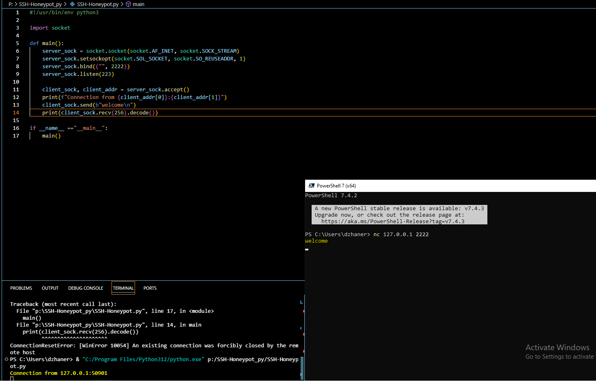
If I write 'hello', it shows up back in the program.
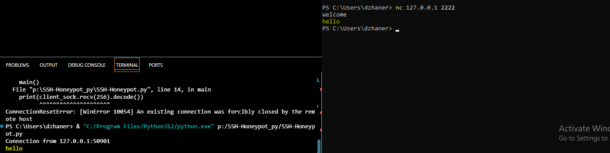
So, I have built a TCP socket. Now, that's a long way from getting me to an SSH server, but I am making progress. I want to build the SSH server, but I don't really want to write all of that myself. I will use the TCP socket and pass it
up to a high-level library that will handle the SSH.
I will use a library called Paramiko.
transport = paramiko.Transport(client_sock) - So, I am basically saying, 'Hey Paramiko, take this socket that is established through a handshake, and now you use that to run an SSH server.' There are a few other things
to get this started. Like an SSH server key, so I will use Paramiko to generate one. Next, I am gonna need some SSH server defined.
I will do something that is normally not supposed to be done, but I will fix it later. For now,
I will just test it. I will use the Paramiko interface, and an interface class is partially defined, but it is not meant to be actually used. It's meant to be imported into some other class, and then the functions are redefined over
it. However, I am going to use the raw interface right now.
I just found out that I don't have Paramiko, so I will install it.
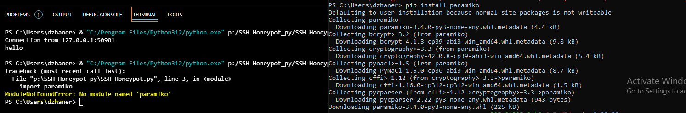
As I said, I am doing something that is normally not supposed to be done, so I was expecting it to crash. Now, I will fix it and make it better.
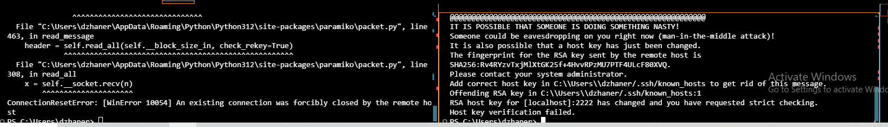
Before I do that, I am going to handle some basic quality-of-life improvements that have been a bit of a hassle for me. The first thing I want to do is ensure I don't have to generate this key every time.
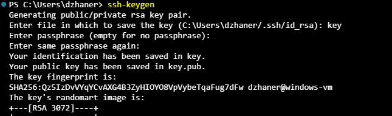
And now, if I run ls.
Because my SSH key changed, my client thought I was getting a man-in-the-middle attack, so I needed to remove the entry. Now it should let me connect.
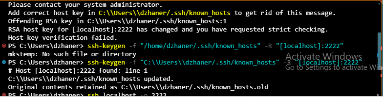
Now I am able to connect, so there is a bit of progress.
Also, I am sick of restarting it every time, so I will add a while True statement.
And as you can see, I am making a new connection each time with different ports, but I don't have to restart the server.
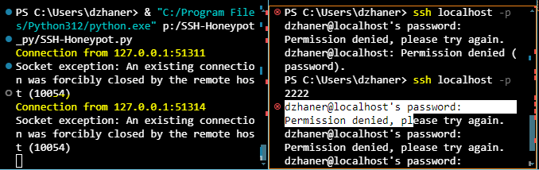
And the last thing I want to do (which isn't necessary for what I am trying to achieve at this moment) is to log credentials and indicate if they failed. However, if I want to do anything more serious, I would have to create a thread,
so I will do just that.
So now, instead of waiting for each client connection to finish and then going back to accepting, I am going to immediately print that there is a connection and start a thread to handle that connection. This way, hypothetically, two clients
can connect at the same time.
class SSHServer(paramiko.ServerInterface): This will handle working through which functions need to be called. I am only going to need to define one of them, called check_auth_password.
The login attempts
are being logged now, so this meets the expectations I had for this app.
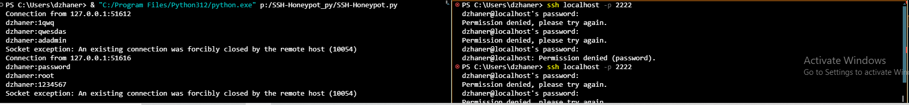
This is how the code looks at the end:
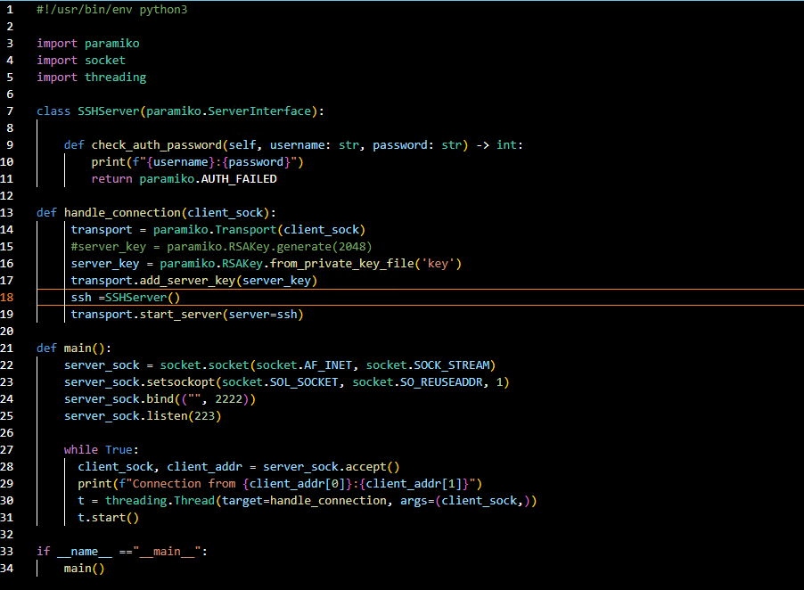